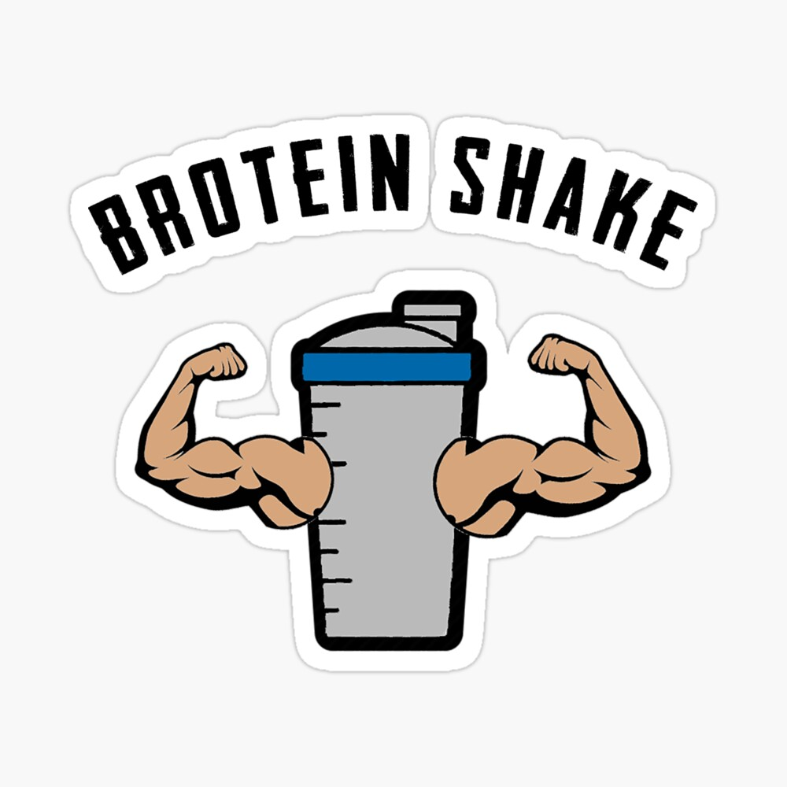

Post-Workout Brotein Shake

Brotein Shake
Yo. You just finished a hardcore workout, but you're mildly lactose intolerant so you need some protein without the secretions of a cow, right? Well, I got the shake for you. Let's twist this.
Ingredients
- Swole muscles
- A blender, like a Ninja
- 6 oz of almond "milk," or any other liquid that pretends to be milk but ain't
- Protein powder. Whatever you like. I use MÖLK
- Banana
- Ice cubes
Cooking Instructions
- Throw all the ingredients in the blender at the same time and hit the blend button. If you have a fancy blender like I do, I guess you could hit the "chop," "puree," or "stir." I honestly don't have a clue what they do. Just push something.
- If it's too thin, add some more ice cubes. If it's too thick...well, I guess you could add water or something.
- Pound it.